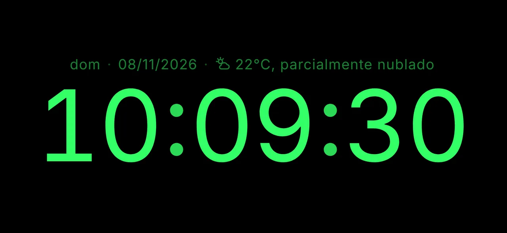
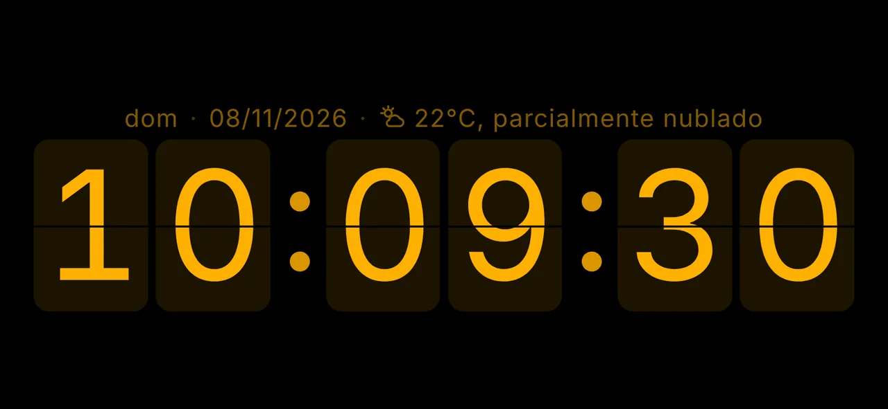
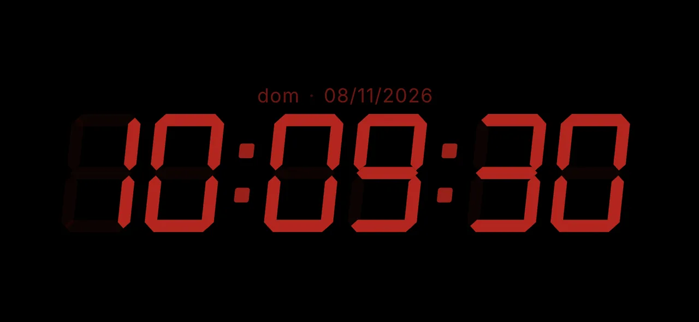
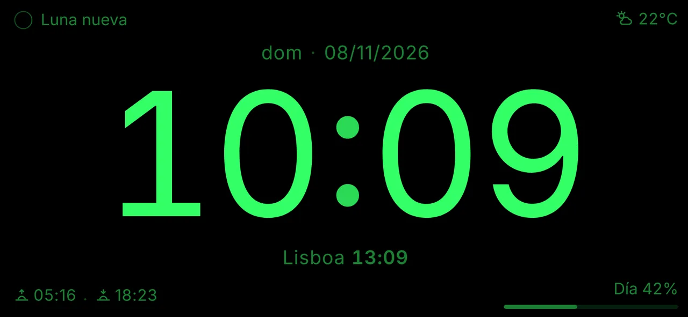
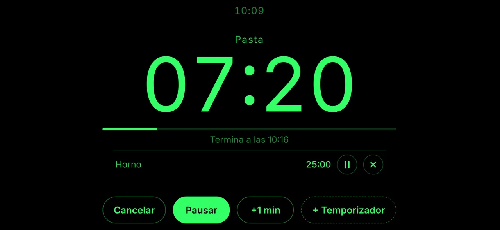
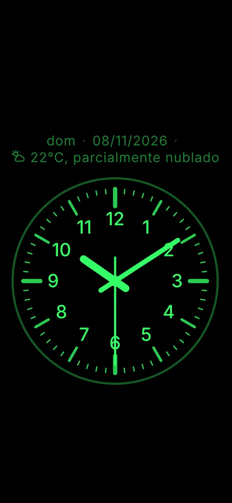
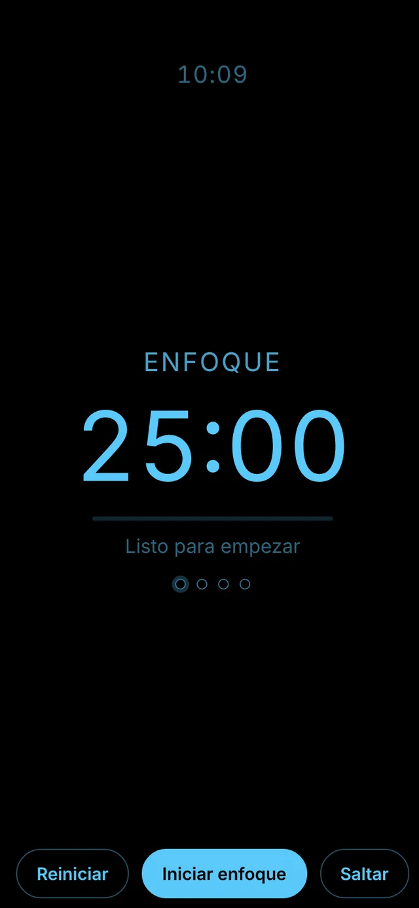

Tu celular como reloj de escritorio.
Sin anuncios.
NADA Clock (No Ads, Display Always) es un reloj de escritorio minimalista para iPhone y Android. La pantalla queda encendida y nada aparece encima de la hora. Gratis, sin registro y sin pasar por la tienda de apps.
Abrir el reloj Cómo instalarlo

Por qué existe
Las apps de reloj de escritorio que encontré tenían anuncios y, en algún momento, el anuncio aparecía justo encima del reloj.
NADA Clock nació para ser lo contrario: solo la hora en pantalla. Es un proyecto personal y de código abierto, hecho para uso propio y compartido con quien quiera usarlo.
Cómo instalarlo
No necesitas App Store ni Play Store. Agregas el reloj a la pantalla de inicio desde el navegador y se abre como una app: a pantalla completa y sin conexión.
iPhone (Safari)
- Abre ofeliper.github.io/nada-clock/ en Safari.
- Toca Compartir (el cuadrado con la flecha hacia arriba).
- Elige Agregar a inicio y confirma.
- Abre NADA Clock desde el ícono. La pantalla queda encendida mientras el reloj esté abierto (iOS 18.4 o posterior).
Android (Chrome)
- Abre ofeliper.github.io/nada-clock/ en Chrome.
- Toca el menú ⋮ y elige Instalar app (o Agregar a la pantalla principal).
- Abre NADA Clock desde el ícono.
- ¿Rotación bloqueada? Toca la pantalla y usa el botón de girar en la barra superior para ver el reloj en horizontal.
- Batería: con la pantalla siempre encendida, lo ideal es dejar el celular cargando.
Qué hace
Digital o analógico
Fuente redondeada, LED de 7 segmentos o tarjetas que giran (flip). Formato de 12 o 24 horas y segundos opcionales. Un toque cambia entre digital y analógico.
Pantalla siempre encendida
Ajusta el brillo deslizando el dedo hacia arriba y hacia abajo. Modo nocturno por horario, con rojo oscuro y brillo reducido.
Una esfera a tu manera
Once posiciones alrededor del reloj para fecha, temperatura, otro huso horario, fase lunar, salida y puesta del sol, cuenta regresiva o texto libre. Arrastra para reorganizar, guarda diseños y compártelos por enlace o código QR.
Clima
Temperatura y estado del tiempo (“22 °C, parcialmente nublado”), sensación térmica, máxima y mínima y probabilidad de lluvia.
Temporizador, cronómetro y pomodoro
Varios temporizadores a la vez, con nombre. Cronómetro con vueltas. Pomodoro con ciclos de enfoque y descansos.
Hecho para el escritorio
Protección contra quemado de pantalla, bloqueo de toques, horizontal forzada, modo espejo y sonidos opcionales de tic-tac y de hora en punto.
Funciona sin conexión, en español, portugués e inglés, y permite respaldar tus ajustes.
Así se ve






Privacidad
Sin anuncios, sin cuenta y sin rastreo. Tus preferencias se guardan solo en tu dispositivo.
Los servicios externos se usan solo cuando activas la función correspondiente: Open-Meteo (clima, licencia CC BY 4.0, y búsqueda de ciudades) y GeoJS (ubicación aproximada por la dirección IP). La ubicación se redondea (~1 km) y no sale de tu dispositivo salvo en esas consultas.
Preguntas frecuentes
¿Tengo que descargarlo de la App Store o de Play Store?
No. NADA Clock es una web app (PWA): la agregas a la pantalla de inicio desde el navegador y funciona como una app, a pantalla completa y sin conexión.
¿Es gratis?
Sí, sin anuncios ni compras. El código es abierto, con licencia MIT.
¿Por qué se apaga la pantalla del iPhone?
Mantener la pantalla encendida requiere iOS 18.4 o posterior y abrir el reloj desde el ícono de la pantalla de inicio, no desde una pestaña de Safari.
¿Suena la alarma con la app cerrada?
No. Por ser una web app, el temporizador, el pomodoro y los sonidos solo suenan con el reloj abierto en pantalla.
¿Por qué no aparece la temperatura?
Necesita una ubicación: GPS (con permiso), aproximada por internet (sin permiso) o una ciudad elegida. Defínela en Ajustes → Ubicación.
¿Cómo actualizo a la versión más reciente?
En Ajustes → General, toca “Buscar actualización”. Cuando sale una versión nueva, el reloj también muestra un aviso.
Sugerencias y problemas
¿Tienes una idea o encontraste un problema? Abre un issue en GitHub (necesitas una cuenta gratuita).